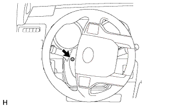
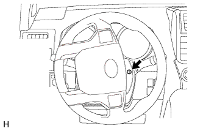
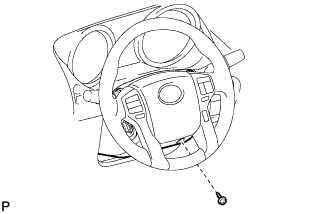
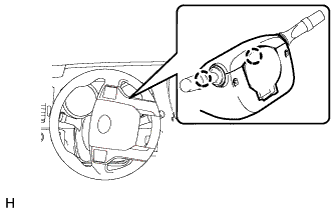
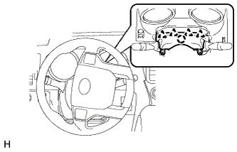
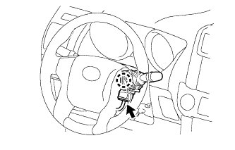
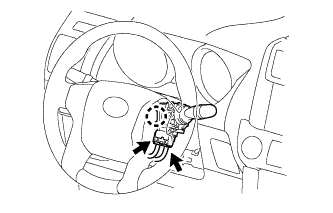

ПЕРЕКЛЮЧАТЕЛЬ СТЕКЛООЧИСТИТЕЛЯ > СНЯТИЕ |
| 1. ОТСОЕДИНИТЕ ПРОВОД ОТ ОТРИЦАТЕЛЬНОГО ВЫВОДА АККУМУЛЯТОРНОЙ БАТАРЕИ |
| 2. СНИМИТЕ НИЖНИЙ КОЖУХ РУЛЕВОЙ КОЛОНКИ |
|  |
Поверните рулевое колесо влево настолько, чтобы можно было вывернуть винт.
|  |
Поверните рулевое колесо вправо настолько, чтобы можно было вывернуть винт.
|  |
С электроприводами регулировки наклона и телескопического изменения высоты:
Выверните винт.
|  |
Освободите 2 захвата и снимите нижний кожух рулевой колонки.
| 3. СНИМИТЕ ВЕРХНИЙ КОЖУХ РУЛЕВОЙ КОЛОНКИ |
|  |
Освободите 4 фиксатора и захват и снимите верхний кожух рулевой колонки.
| 4. СНИМИТЕ ПЕРЕКЛЮЧАТЕЛЬ СТЕКЛООЧИСТИТЕЛЯ ВЕТРОВОГО СТЕКЛА В СБОРЕ |
|  |
Для моделей с датчиком дождя:
Отсоедините разъем.
|  |
Для моделей без датчика дождя:
Отсоедините 2 разъема.
Освободите захват и снимите переключатель стеклоочистителя ветрового стекла.